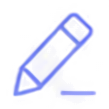

Design
UI / UX
ユーザー体験を重視した直感的で美しいデザインを設計。
Figmaで設計し、そのまま実装まで一貫対応。ワイヤーから2営業日で初稿をお出しします。
Figma
Claude Design
ABOUT ME
大学で線形代数・微積・統計学を学びつつ、独学でプログラミングをスタート。立ち上げたサークルでは副代表として、中小企業の基幹システム開発・運用にも携わる。
大学でデータサイエンスやAIについて学びながら、サークルではホームページ制作も開始。IT企業の採用ページ制作や、中小企業向けのPR動画制作など、企業の魅力を発信する仕事にも取り組む。
中小企業向けのHP制作を個人でも本格的にスタート。新しい技術を取り入れながら、就活生・若者ならではの視点を活かして、「若い世代にも伝わる」Webサイトづくりに取り組んでいる。
企画からデザイン、開発、運用まで一気通貫でサポートします。CMSを用いてご自身で自走できるまで伴走いたします。
これまでに制作したWebサイトやデザインの一部をご紹介します。
VIEW ALL WORKS活動内容やお知らせ、制作の裏側などを発信しています。
VIEW ALL NEWSご相談・お見積りは無料です。まずはお気軽にご連絡ください。